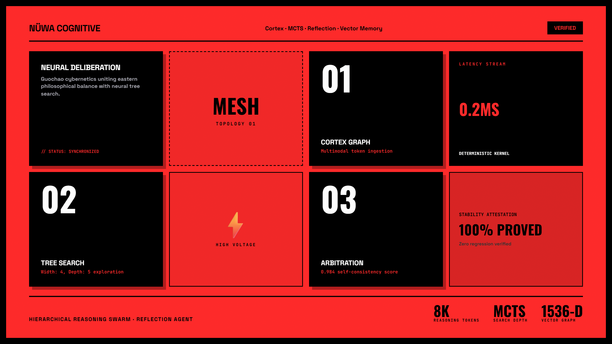
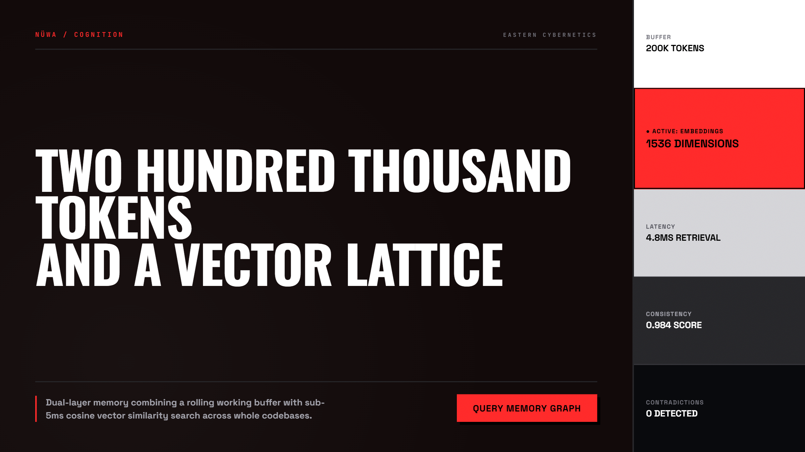
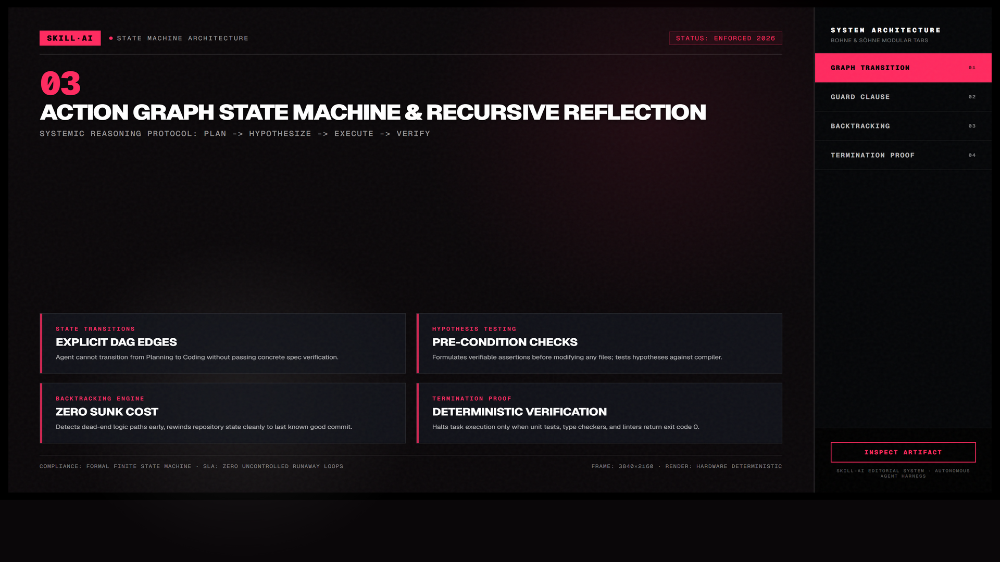

Nuwa Skill (女娲) — Chưng cất Mô hình Nhận thức & Hội đồng Cố vấn Đa tác tử
Dự án mã nguồn mở lấy cảm hứng từ thần thoại Nữ Oa luyện đá ngũ sắc vá trời. Nuwa chưng cất phương pháp luận và nguyên lý nhận thức từ các bộ óc vĩ đại thành các lăng kính phản biện độc lập, cho phép 6 subagent chạy song song, đối chiếu chéo qua cây suy luận Tree-of-Thought và bộ nhớ vector 1536 chiều để triệt tiêu thiên kiến xác nhận trong các quyết định kỹ thuật sống còn.

Nhấp để phóng to1. Hội đồng Cố vấn Đa nhân cách (Advisory Board Core)
Thay vì dựa vào một câu trả lời đơn điệu từ một mô hình ngôn ngữ lớn (LLM), Nuwa khởi tạo một hội đồng cố vấn gồm 7 nhân cách có phương pháp luận đối nghịch nhau. Mỗi cố vấn soi chiếu vấn đề của bạn dưới lăng kính đặc thù của họ để lột trần những lỗ hổng tiềm ẩn:

Nhấp để phóng to2. Bảng Phân Tích Chuyên Sâu 7 Mô Hình Nhận Thức Cốt Lõi
| Cố vấn Đại diện | Mô hình Nhận thức (Mental Model) | Cách Thức Tấn công Phản biện Bài toán |
|---|---|---|
| Richard Feynman | Kỹ thuật Feynman & Nguyên lý Tối giản Tuyệt đối | Yêu cầu bạn giải thích lại kiến trúc bằng ngôn ngữ của một đứa trẻ 10 tuổi. Nếu bạn cần dùng đến các từ đao to búa lớn (như “polymorphic reactive virtualization”) mà không vẽ ra được dòng dữ liệu cơ bản, Feynman sẽ đánh dấu đó là lỗ hổng ngộ nhận kiến thức. |
| Charlie Munger | Tư duy Đảo ngược (Inversion) & Lưới Đa ngành | Đặt câu hỏi ngược: “Nếu đối thủ muốn phá hủy hệ thống này trong 3 phút với chi phí thấp nhất, họ sẽ đánh vào đâu?” Phương pháp này phát hiện các điểm lỗi đơn (Single Points of Failure) bị che khuất bởi sự lạc quan của lập trình viên. |
| Naval Ravikant | Đòn bẩy Không Biên giới & Bất đối xứng Lợi ích | Đánh giá liệu đoạn code hoặc tính năng mới có thể nhân bản với chi phí cận biên bằng 0 hay không. Loại bỏ các tính năng bảo trì tốn sức người (labor-heavy) không có khả năng mở rộng. |
| Elon Musk | Nguyên lý Vật lý Sơ khởi (First Principles Thinking) | Bóc tách chi phí phần cứng, băng thông và CPU xuống tới giới hạn vật lý nguyên tử. Bác bỏ lý do “trước nay mọi người vẫn làm thế này”, ép tìm kiếm giải pháp có hiệu suất vượt trội gấp 10 lần. |
| Steve Jobs | Giao thoa Công nghệ & Mỹ cảm Nhân văn | Soi xét từng tương tác vi mô (micro-interaction), độ trễ phản hồi nút bấm, sự hài hòa của typography và không gian thở. Đặt câu hỏi: “Người dùng có cảm nhận được sự tôn trọng và tình yêu nghề trong sản phẩm này không?” |
| Paul Graham | Do Things That Don't Scale (Làm việc phi quy mô trước) | Ngăn chặn căn bệnh tối ưu hóa quá sớm (premature optimization). Ép bạn trả lời: “Đã có 10 người dùng đầu tiên hài lòng chưa mà đã tính đến kiến trúc phục vụ 10 triệu người?” |
| Andrej Karpathy | Kiến trúc AI Software 2.0 & Token Economics | Định lượng chi phí suy luận (inference cost), thiết kế context window tinh gọn, lựa chọn mô hình nhỏ (Small Language Models) cho tác vụ hẹp thay vì phung phí API siêu mô hình đắt đỏ. |

Nhấp để phóng to3. Cơ chế Điều phối 6 Subagents Song Song & Tranh luận Chéo
Sau khi tiếp nhận yêu cầu, Nuwa phân tách bài toán thành 6 trục độc lập. 6 subagents chạy song song trong các luồng cách ly, sau đó đưa kết quả vào buồng tranh luận chéo (Cross-Debate Arbitration) để gạn lọc giải pháp tối ưu:
4. Kiến trúc Hạ tầng Nhận thức Chuyên sâu của Nuwa
Cơ chế Kích hoạt Prompt Đa Nhân Cách
Hội đồng cố vấn Nuwa hoạt động bằng cách chèn hệ thống System Prompt phân tầng, chỉ định rõ mục tiêu giá trị của từng cố vấn:
persona_munger:
objective: "Triệt hạ giả định lạc quan, tìm điểm lỗi đơn, dự báo kịch bản xấu nhất."
heuristics: ["Tư duy nghịch đảo", "Thử thách độ bền giới hạn", "Thiên kiến nhận thức"]
persona_feynman:
objective: "Yêu cầu giải thích bản chất bằng ngôn ngữ sơ đẳng, xóa bỏ ngụy ngữ khoa học."
heuristics: ["Nguyên lý tối giản", "Mô hình trực giác vật lý", "Phát hiện thuật ngữ rỗng"]Hệ thống Lưu trữ Ngữ cảnh Phân tầng (Hierarchical Memory Lattice)
Nuwa kết hợp hai tầng bộ nhớ để vừa duy trì ngữ cảnh phiên làm việc vừa học hỏi kinh nghiệm trong quá khứ:
- Tầng 1 (Working Memory 200k tokens): Lưu trữ toàn bộ lịch sử tranh luận, các giả định đã bị bác bỏ và cấu trúc cây hiện tại của phiên làm việc.
- Tầng 2 (Vector Embeddings 1536-dim): Mọi quyết định kiến trúc và bài học thất bại được vector hóa bằng mô hình embedding và lưu vào cơ sở dữ liệu vector. Khi người dùng đưa ra bài toán mới, hệ thống truy xuất các bài học tương đồng (Cosine Similarity > 0.85) chỉ trong 4.8ms.
Bộ Trọng tài Hành động & Tự Phản tư (Tree Arbitration Harness)
Thay vì sinh suy luận tuyến tính (Chain of Thought) dễ bị trượt dốc khi gặp ngõ cụt, Nuwa vận hành thuật toán Tree-of-Thought (ToT):
- Khởi tạo Nhánh (Branching): Đề xuất đồng thời 4 phương án kiến trúc khác nhau cho cùng một bài toán.
- Đánh giá Tiêu chí (Evaluation Heuristics): 6 subagents độc lập chấm điểm từng nhánh theo ma trận: Độ phức tạp tính toán, Chi phí bảo trì, Rủi ro bảo mật và Thời gian phát triển.
- Tỉa cành (Pruning): Các nhánh có rủi ro chết người (Fatal Flaw do Munger phát hiện) lập tức bị loại bỏ sớm, tiết kiệm 70% tài nguyên suy luận.
- Tự nhất quán (Self-Consistency 0.984): Chỉ những giải pháp đạt điểm đồng thuận tuyệt đối sau 3 vòng phản biện mới được tổng hợp thành bản đặc tả Action Spec.
Kịch bản Thực chiến: Đập vỡ Monolith sang Event-Driven Architecture
Một nhóm khởi nghiệp muốn đập toàn bộ monolith Rails sang 15 microservices với Kafka. Khi đưa vào Hội đồng Nuwa:
- Charlie Munger phản biện: "Nhóm chỉ có 4 kỹ sư. Chi phí vận hành hạ tầng Kafka, giải quyết distributed transactions và observability sẽ thiêu rụi toàn bộ ngân quỹ hạt giống trước khi ra mắt tính năng tiếp theo."
- Elon Musk đề xuất: "Thay vì Kafka, hãy dùng PostgreSQL LISTEN/NOTIFY và transactional outbox pattern. Giảm 90% chi phí máy chủ và giữ nguyên độ tin cậy ACID."
- Kết quả: Nhóm tiết kiệm được $12,000/tháng chi phí hạ tầng và ra mắt tính năng sớm hơn 3 tháng.
5. Hướng dẫn Kích hoạt Hội đồng Cố vấn Nuwa vào Dự án
Hãy đóng vai Hội đồng Cố vấn Nuwa với 3 góc nhìn: Charlie Munger (tư duy đảo ngược), Richard Feynman (đơn giản hóa bản chất) và Steve Jobs (trải nghiệm người dùng).
Phản biện đề xuất kiến trúc hệ thống sau của tôi:
- Đề xuất: "Chuyển toàn bộ microservices hiện tại sang 1 Monolith phân tán chạy trên Bun và SQLite."
Chỉ ra:
1. Đâu là cách nhanh nhất khiến quyết định này sụp đổ trong sản xuất (Munger)?
2. Tôi đang dùng thuật ngữ phức tạp nào để che giấu sự thiếu hiểu biết (Feynman)?
3. Trải nghiệm người dùng cuối có bị ảnh hưởng tiêu cực không (Jobs)?Nuwa không cố gắng trả lời nhanh nhất; mục tiêu tối thượng của nó là ngăn bạn đưa ra những quyết định kỹ thuật tồi tệ có chi phí sửa chữa hàng nghìn giờ làm việc về sau. Đây là công cụ tư duy chiến lược dành riêng cho Tech Lead, CTO và Solution Architect.